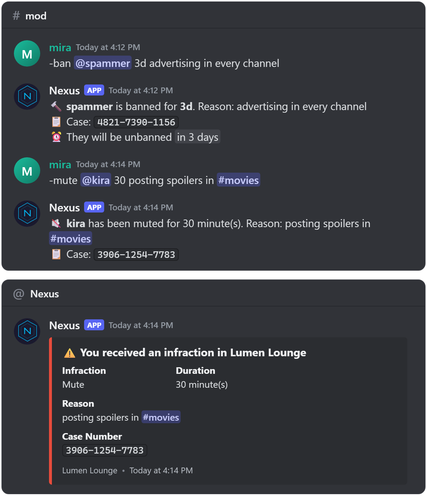
Moderation that keeps a record
Kick, ban, mute and warn with a case number on every action, so the team can always see what happened and why.
- Every kick, ban, mute and warn is saved as a case with its own number, like
4821-7390-1156. - The member gets a private message with the action, the reason and the case number. You can switch it off, or hide the case number, from the dashboard.
- Bans can be timed, like
-ban @user 3d reason, and lift themselves when the time is up. Mutes run from 1 minute up to 28 days. - Bans and mutes work on people who aren't in the server too. A saved mute starts the moment the person joins.
- Role checks on every action: you can't act on someone at or above your top role, and Nexus won't try if their role sits above its own.
- Search with
-cases, open one with-caseinfo, and undo a mistake with-casedelete, which also lifts the ban or mute. Members can read their own record with-myhistory. - Channel tools are included:
-purgeclears up to 100 messages from a member, and-lock,-unlockand-slowmodecalm a channel.
-ban-kick-mute-warn-cases-purge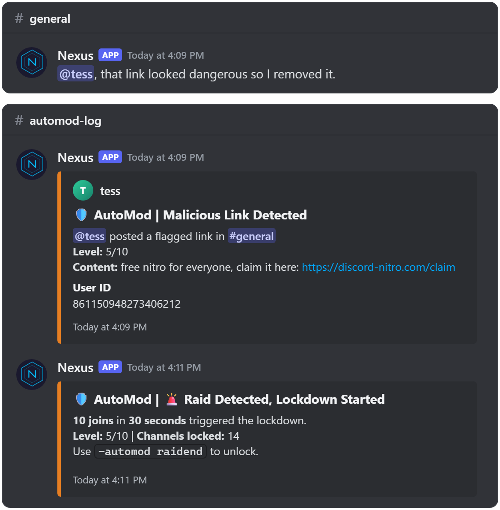
Protection that works while you're away
Spam, scam links and raids are dealt with automatically, and every action is posted to a log channel.
- Three protections, each with its own level from 1 to 10: spam, scam links and raids. Level 0 turns one off.
- Spam: when a member sends too many messages too fast, Nexus removes them. At level 5 that is more than 6 messages in 10 seconds.
- Scam links: messages with known scam and phishing domains are deleted, and edited messages are checked too, so a link can't be slipped in afterwards.
- Raids: when too many people join at once (10 in 30 seconds at level 5), Nexus locks every text channel. Anyone who joins during the lockdown is kicked.
- End a lockdown with
-automod raidend. Every channel goes back exactly as it was before. - Choose roles and members AutoMod should ignore with
-automod whitelist. - Each action is logged with the member, the channel and the level, in the channel you pick with
-automod logging.
-automod setup-automod logging-automod whitelist-automod raidend-automods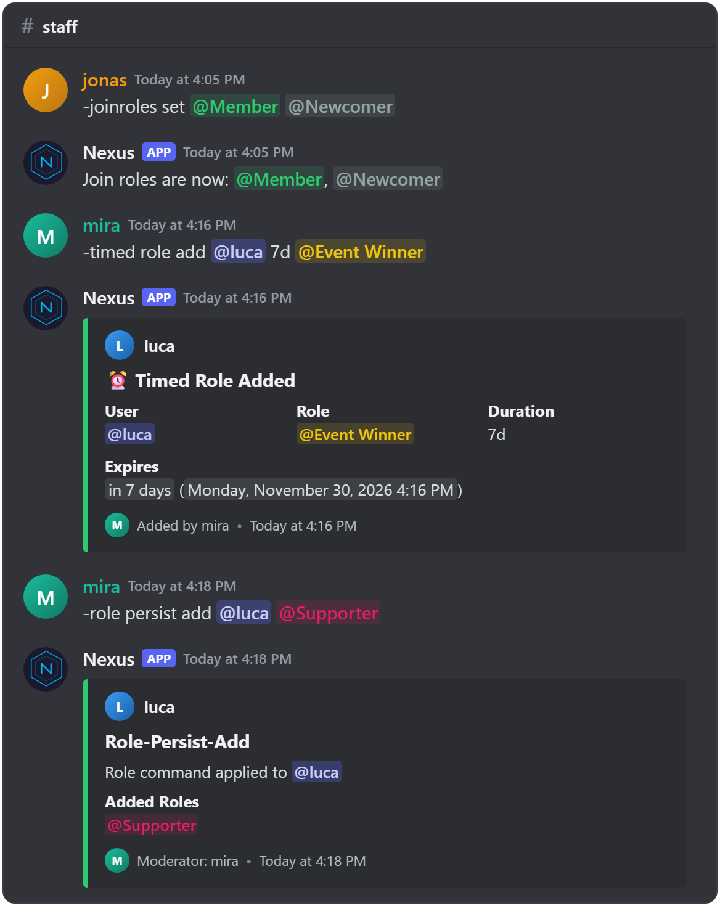
Roles that hand themselves out
Give roles when people join, bring them back when members return, and take them away on a timer.
- Join roles go to every new member automatically. Set them with
-joinroles set @Member @Newcomer. - Persistent roles are saved for a member and given back if they leave and come back.
- Timed roles remove themselves when the time is up. Use
30m,2h,3d,1w,2monor1y, up to 5 years. - Add, remove, toggle or set roles on a member in one command, several roles at a time.
- You can't hand out a role above your own, and Nexus skips roles it can't manage, so nothing gets out of hand.
- Role changes come back as a short summary showing who was changed, which roles, and who did it.
-joinroles-role add-role persist-timed role add-timed roles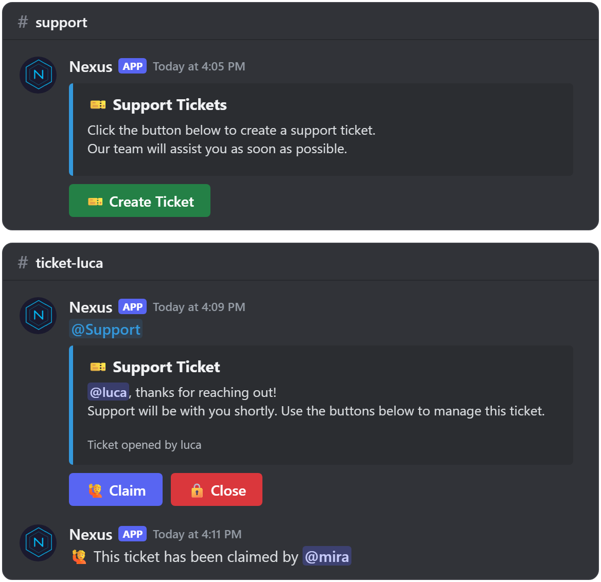
Private tickets in one click
Members press one button to open a private channel with your team. Setup is a single command.
- Run
-ticket setupwith a support role, a category and a log channel, then-ticket panelto post the button. - Each ticket is a private channel, hidden from everyone except the member and your support role.
- One open ticket per member, so the queue stays tidy.
- Staff claim a ticket with a button, and bring people in or out with
-ticket addand-ticket remove. - Close a ticket with the button or
-ticket close. The channel is deleted after 5 seconds and the log shows who opened and who closed it. - The panel, setup and open tickets can also be managed from the dashboard.
-ticket setup-ticket panel-ticket add-ticket close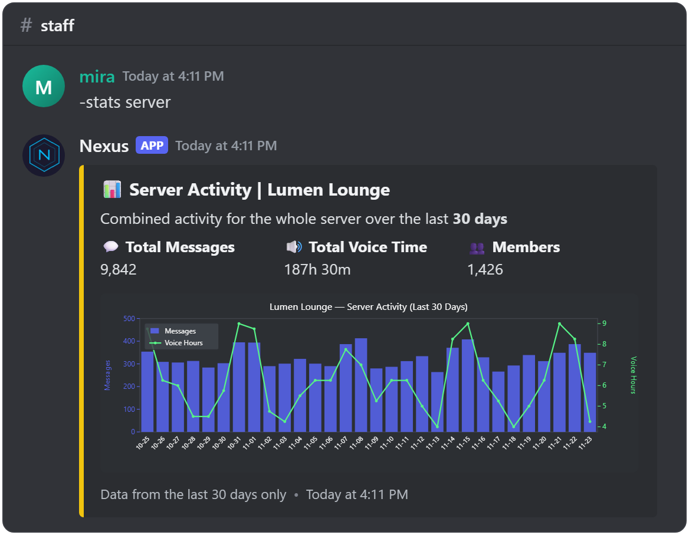
Thirty days of activity, charted
See who is active, where, and how the server is growing, with charts built straight into Discord.
- Messages and voice time are counted for the last 30 days, per member and per channel.
-stats usershows a member's totals, their rank in text and voice, their top 3 channels and a daily chart.-stats servercharts the whole server, and-stats toplists the top 3 members and channels for text and voice.-stats channelshows how many members have posted in a channel and who posts the most.-stats memberscharts joins and leaves with the net change, and-stats inviteshows how many people an invite brought in.- Only counts are stored: who, where and when. The content of messages is never saved.
-stats user-stats server-stats top-stats members-stats invite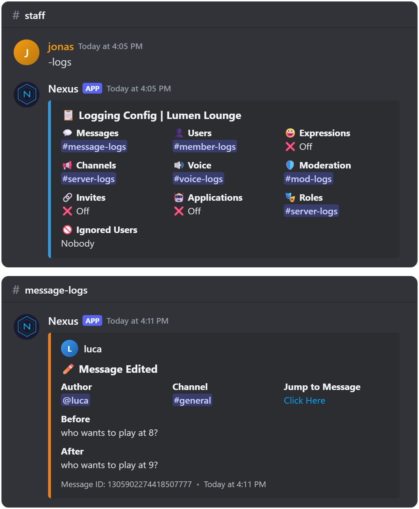
Nine kinds of log, each in its own channel
Messages, members, voice, roles and more are logged, and you choose where each one goes.
- Nine categories: messages, users, expressions, channels, voice, moderation, invites, applications and roles. Each goes to its own channel, or stays off.
- Edited messages show what they said before and after. Deleted messages show the author, the channel and what was written.
- Joins and leaves show the account age and the member count. Kicks and bans show who did it and why.
- Voice joins, leaves and moves, role and channel changes, and invites created or deleted are all recorded.
- Warns, mutes, unwarns and unmutes are logged with their case numbers, and so are cases that get voided.
- Leave out people you do not want logged, like bots or staff, with
-logging ignore add.
-log-logs-log remove-logging ignore add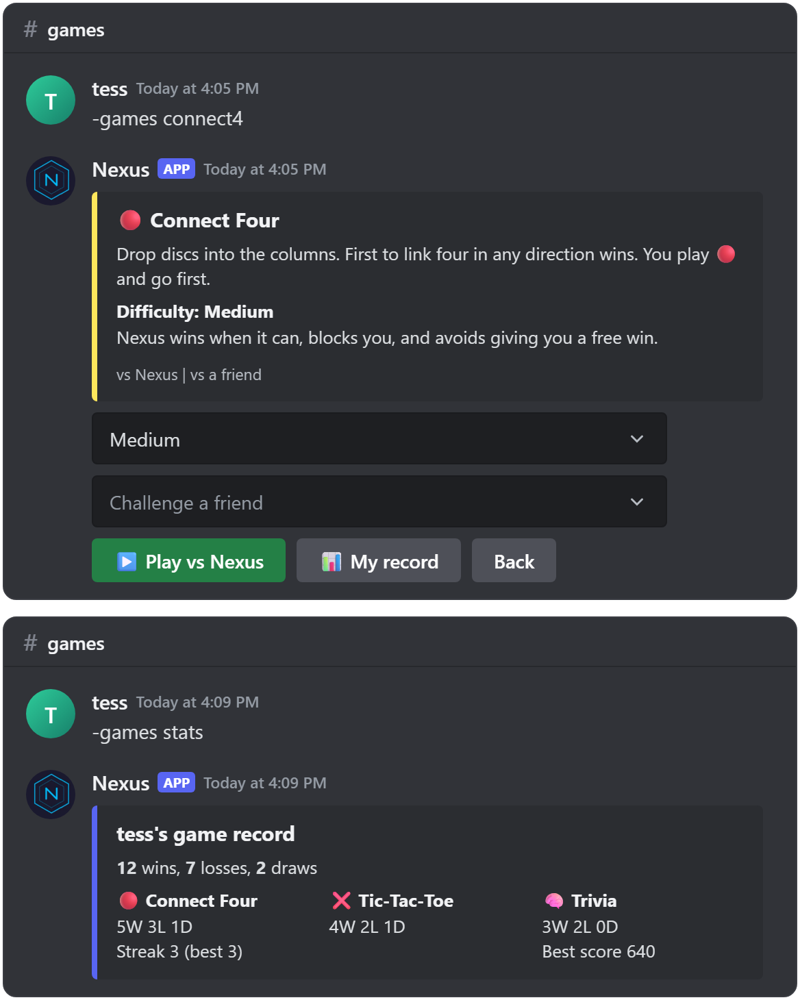
Games without leaving Discord
Pick a game from a menu, then play Nexus or challenge a friend. Your record follows you across servers.
- Tic-Tac-Toe, Connect Four, Rock Paper Scissors, Blackjack, 2048, Trivia, Number Guess and Hangman.
-gamesopens a menu, and short names jump straight in:-games c4,-games tttor-games bj.- Pick Easy, Medium or Hard. The lobby spells out what each level changes before you start.
- Most games can be played against a friend you choose from a list. They have a minute to accept.
- Blackjack and 2048 are solo, since the dealer or the board is the opponent.
- Wins, losses, draws, streaks and best scores are kept with
-games stats, across every server Nexus is in. - The menu belongs to whoever opened it, so nobody else can press your buttons.
-games-games stats-games connect4-games ttt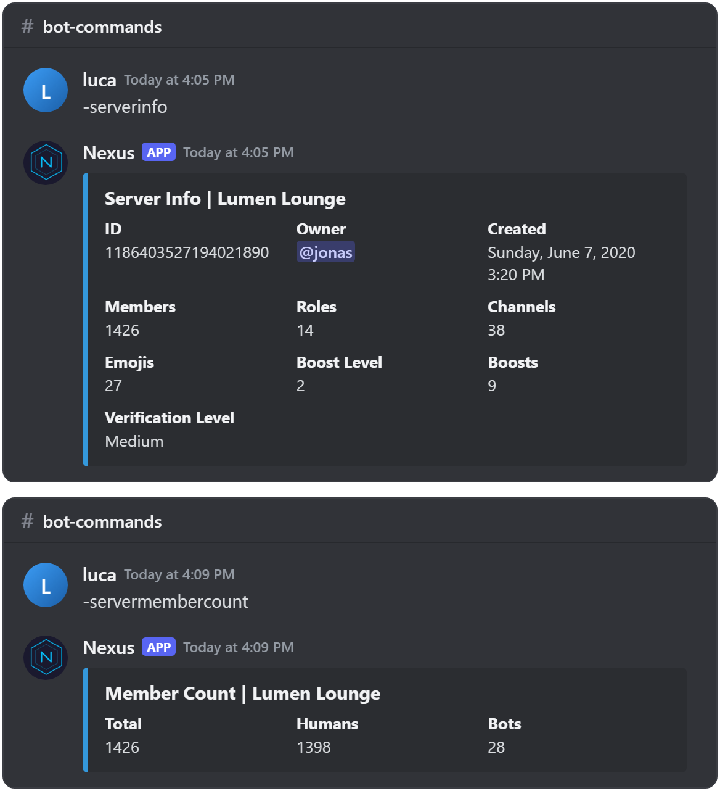
Look up anything about your server
Quick answers about members, roles, channels and the server, without opening a single menu.
-userinfoshows when an account was made, when the member joined, their top role and every role they have.-serverinfocovers the owner, creation date, members, roles, channels, emojis, boosts and verification level.-servermembercountsplits the total into people and bots, and-serverchannelcountsplits channels into text, voice and categories.-roleinfoshows a role's members, position and colour, and which key permissions it allows or denies.-channelinfo,-emojiinfoand-stickerinfogive the details of one channel, emoji or sticker.-avatarinfo,-bannerinfoand-servericoninfolink to the image in PNG, JPG and WEBP, plus GIF when it is animated.- Find someone by ID or username with
-search. ID lookups work even for people who are not in the server.
-userinfo-serverinfo-roleinfo-avatarinfo-search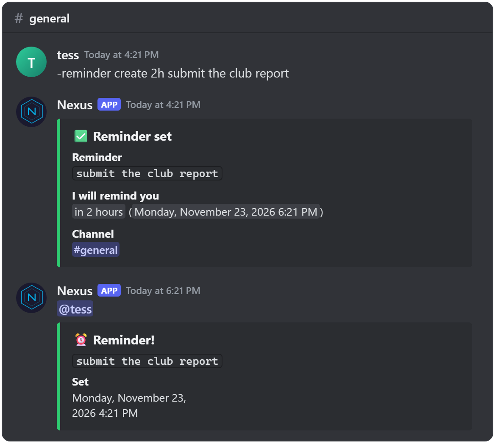
Reminders that find you
Tell Nexus what to remember and when, in short times like 2h or 1h30m.
- Set one with
-reminder create 2h submit the club report. Times can be combined, like1h30m, up to a year. - The confirmation shows exactly when it will go off, in your own time zone.
- Nexus pings you in the channel you set it in. If that channel is gone, you get a direct message instead.
- Keep up to 25 reminders at once, see them with
-reminder listand remove one from a menu with-reminder delete.
-reminder create-reminder list-reminder delete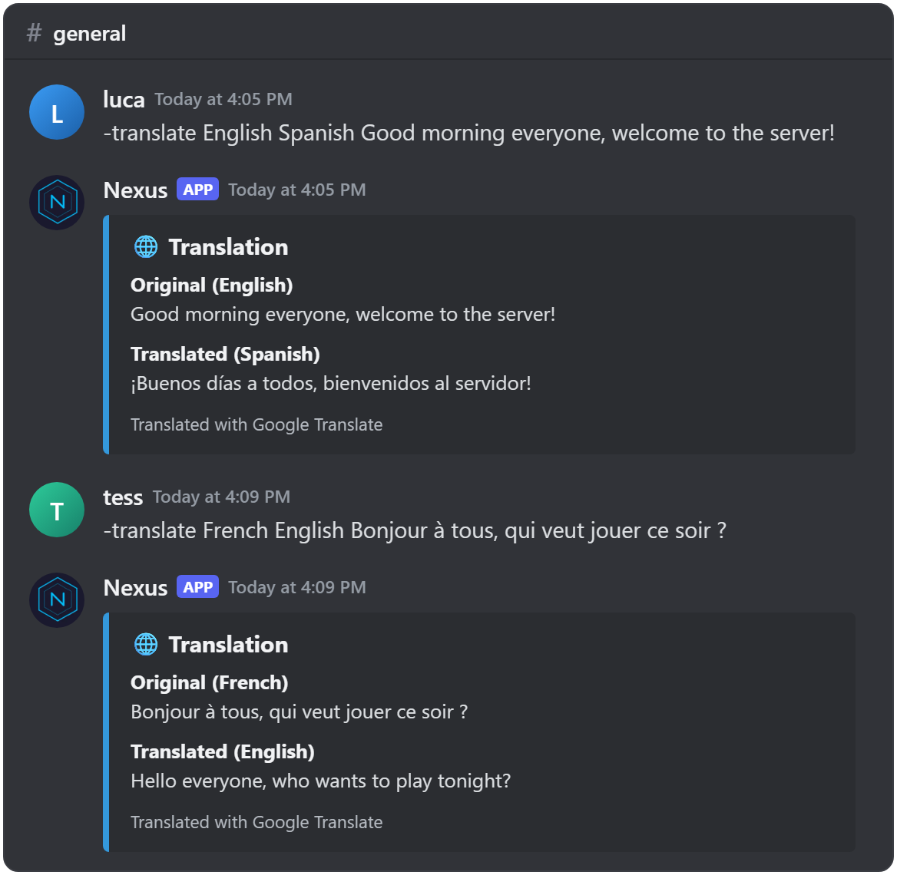
Translate without leaving the chat
Translate any message between languages by name and see the original next to the result.
- Say the language it is in, the language you want, then the text:
-translate English Spanish Good morning!. - Works with the names of more than 50 languages, from English and Spanish to Japanese, Arabic and Swahili.
- The reply shows the original and the translation together, for up to 1,000 characters at a time.
- Translations come from Google Translate, and the reply says so.
-translate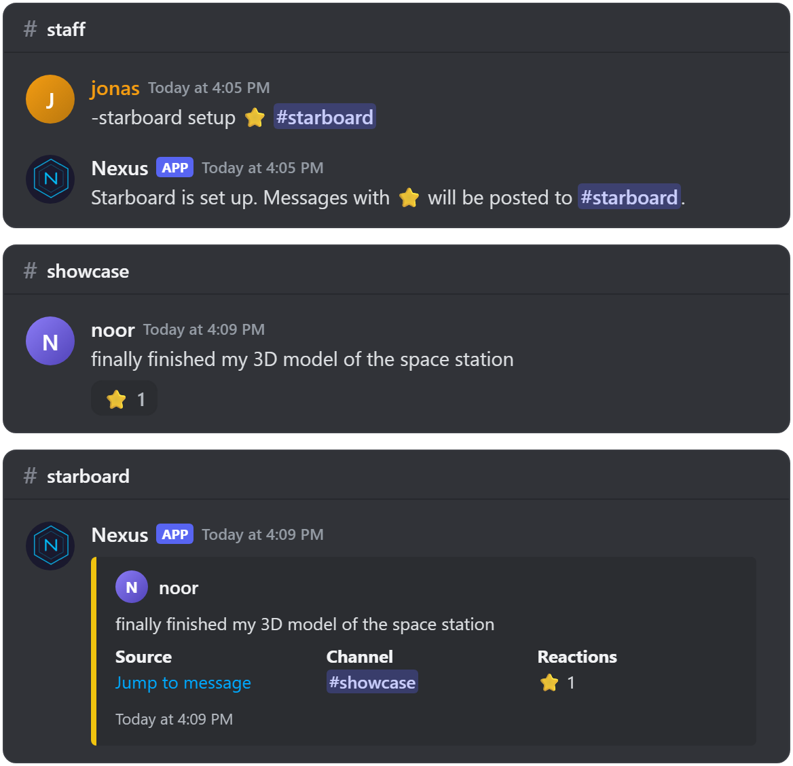
A wall for your best messages
Choose an emoji and a channel. The first time someone reacts with it, Nexus copies that message there.
- Set it up with
-starboard setup ⭐ #starboard. Any normal emoji or server emoji works. - The post shows who wrote it, what they said, the first image attached, a link back to the message, the channel and the reaction count.
- Each message is posted once, and reactions inside the starboard channel itself are ignored.
- It posts as soon as the emoji is added, so pick one your members use on purpose.
- Check the current setup any time with
-starboard.
-starboard setup-starboard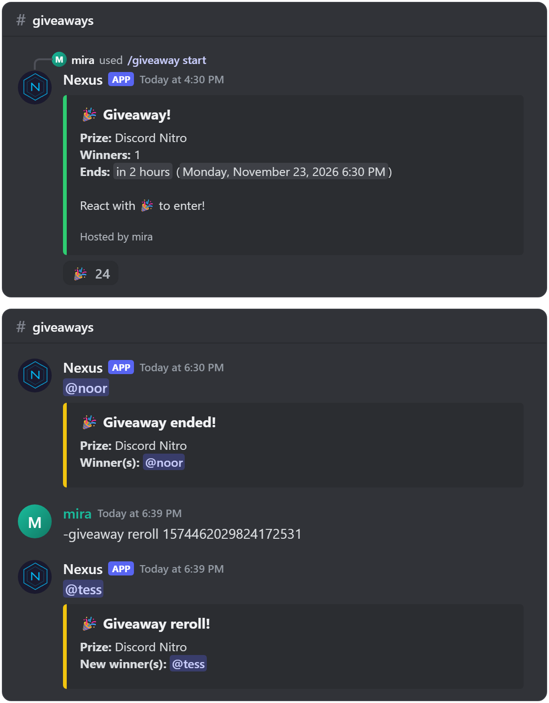
Giveaways that run themselves
Start one with a length, a winner count and a prize. Members enter with a reaction and Nexus picks the winners.
- Start one with
-giveaway start 2h 1 Discord Nitro. Lengths like10m,2hor1dgo up to 30 days, with 1 to 20 winners. - Members enter by reacting with 🎉. Bots and people who have left the server are skipped when winners are picked.
- When time is up, winners are announced with a mention and the original post is updated to show it ended.
- End one early with
-giveaway end, or pick someone else with-giveaway reroll. - Giveaways are saved, so one still ends on time after a restart.
- You can also start and manage them from the dashboard.
-giveaway start-giveaway end-giveaway reroll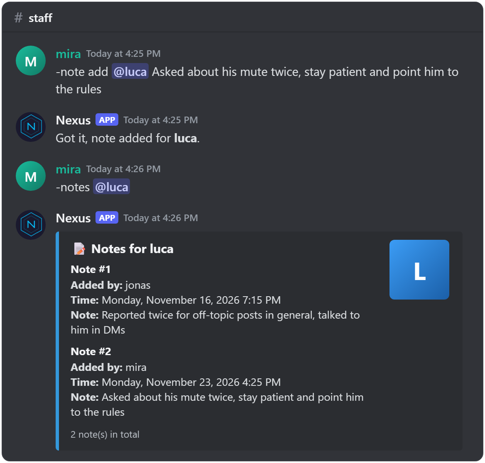
Private notes for your team
Leave context for the next moderator, like why someone was spoken to and what to watch for.
-note add @user textsaves a note of up to 300 characters, with your name and the time.-notes @userlists every note, 8 to a page, with Previous and Next buttons.- Remove one by its number with
-note remove @user 2. - Only staff with the Kick Members permission can read or write notes. Members never see them.
- Notes belong to the server they were written in, and work on people who have left too.
-note add-notes-note remove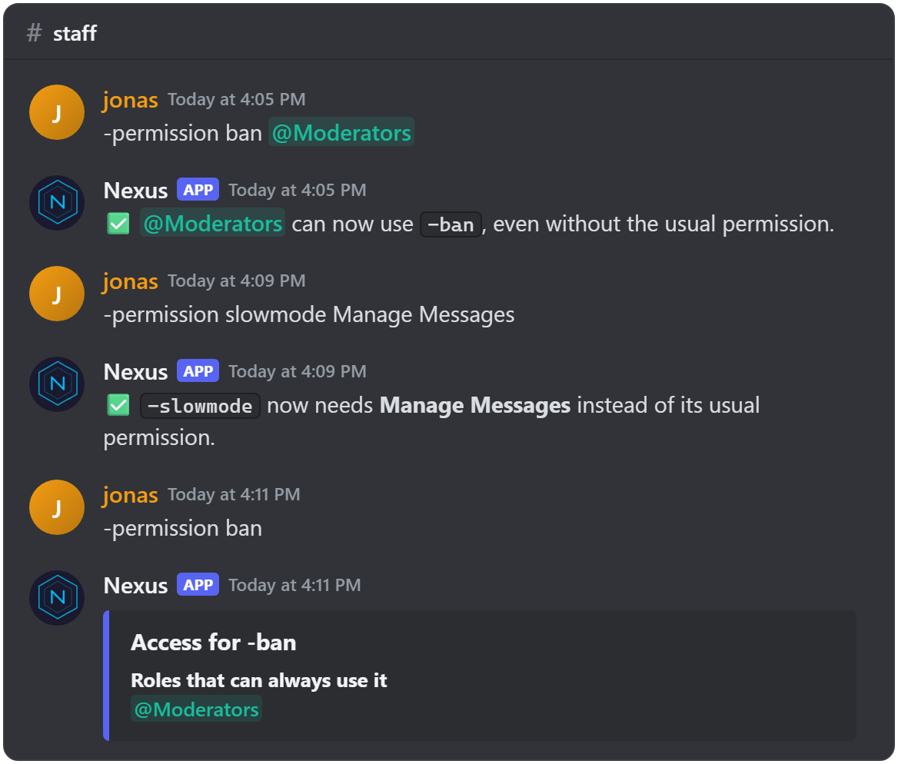
You decide who can run what
Move any command to a different role, person or permission, without touching Discord's own settings.
-permission ban @Moderatorslets a role use-baneven without the Ban Members permission. Run it again to take it away.-permission slowmode Manage Messagesswaps the permission a command needs.- Give a command to one person the same way, by mentioning them.
-permission banon its own shows who has access to that command.- Only administrators can change access, and a few sensitive commands can never be changed.
- The dashboard has a Command access page for the same settings.
-permission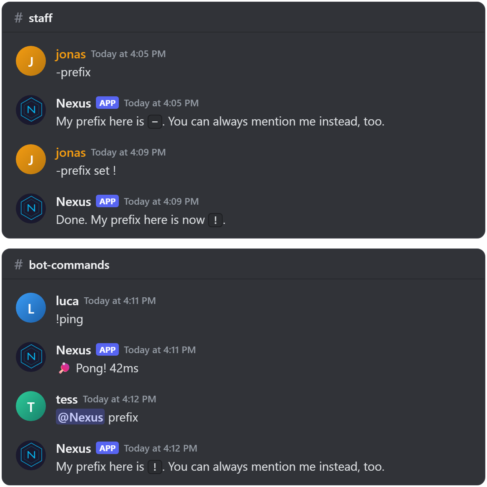
A prefix that fits your server
Change the character before commands. Members can always mention Nexus instead.
-prefix set !changes it for your server. Up to 5 characters, with no spaces.-prefixshows the current one, and mentioning Nexus works whatever the prefix is, so nobody gets locked out.- Each server has its own prefix, so two servers can use different ones.
- Most commands also work as slash commands, so the prefix never gets in the way.
-prefix-prefix setThe server, the members and the numbers in these images are made up. The wording, buttons and layout follow what Nexus really sends.
Ready to try it?
Add Nexus to a server, then type -commands to see everything it can do. The docs walk through each feature step by step.